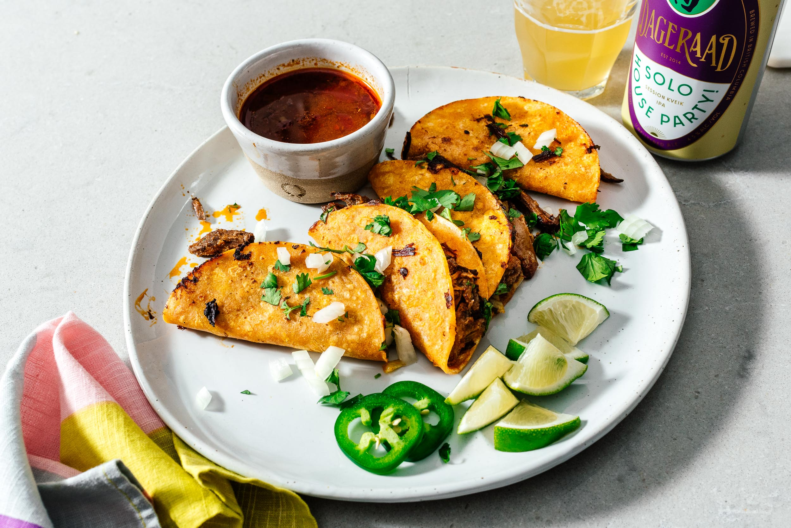

Birria tacos, if you haven’t heard of them yet all over social media and the internet, is traditionally an addictive sweet, sour, slightly spicy, and utterly savory Mexican beef stew that’s slow cooked until the beef is tender and fall-apart juicy and delicious.